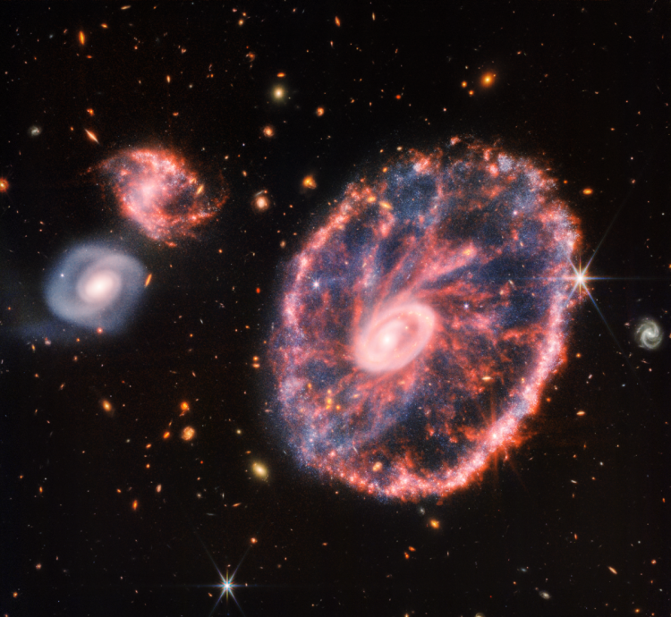

NASA показало далеку рідкісну галактику

Галактика "Колесо воза" дійсно схожа на колеса воза, а її форма — це
результат високошвидкісного зіткнення великої спіральної галактики і
меншої галактики, якої не видно на зображенні. Зіткнення найсильніше
вплинуло на форму та структуру галактики. Вона має два кільця –
яскраве внутрішнє та велике кольорове кільце навколо галактики.
Океани нагріваються ще швидше останні 40 років: темпи збільшилися в 4
рази, - дослідження
За останні 40 років темпи нагрівання океанів збільшилися більш ніж у
чотири рази. Температура океану зростала приблизно на 0,06 градуса
Цельсія протягом десятиліття (наприкінці 1980-х років), а зараз вона
збільшується на 0,27 градуса Цельсія протягом 10 років, пише Phys.
У Києві зафіксували перші температурні рекорди 2025 року (інфографіка)
Перші температурні рекорди 2025 року зафіксували у Києві 26 січня. Про
це повідомляє Український гідрометцентр. За даними спостережень
метеостанції, 26 січня у столиці зафіксували одразу два температурні
рекорди. "Максимальна температура повітря досягла 7,4°С, що на 0,5°С
вище попереднього рекордного показника для цього дня 2021 року", -
кажуть синоптики
У що гратимемо у 2025 році
Rockstar Games нарешті представлять довгоочікуване продовження своєї
культової серії. Цього разу на нас чекає по-справжньому масштабна
кримінальна драма, центр якої - пара нових головних героїв, Лусія і
Джейсон. Дії розгорнуться в сучасному Вайс-Сіті та його околицях.
Сюжет GTA 6 нагадує атмосферу історії про Бонні та Клайда, де кохання,
жадібність і амбіції змішуються з суворою реальністю злочинного світу.